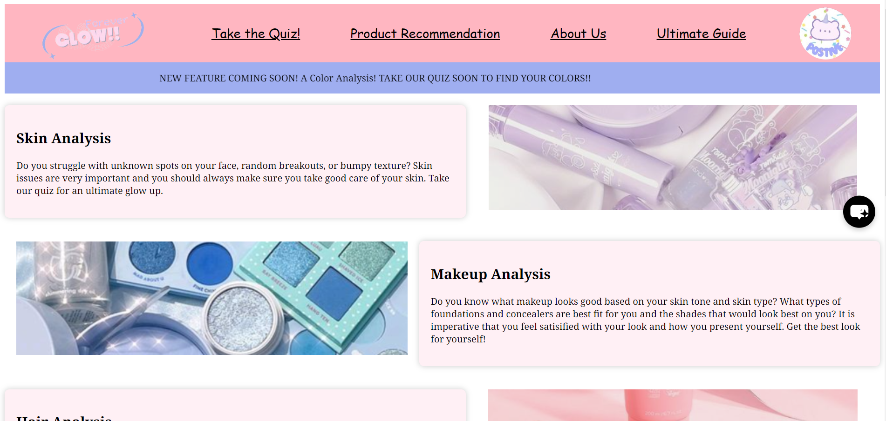

Throughout the course that I have been taking at Emerald High School, Computer Science Essentials, I was able to design a website with my teammates using code to solve an issue going on in the world today. We decided to create a website that is targeted toward young women to feel empowered and secure with how they look and feel. To do this, we wanted to make sure that users can get the recommended products they need. We created four different pages for the website, one a "Take the Quiz" page where people can see which products are best for their skin and hair type, and at the end, they would get results in skincare, haircare, and makeup. Another page was the product recommendation page where users are able to see products that we recommend for all even if they took the quiz or not. The third page was an about us page where we talked about ourselves and what we really are passionate about. Lastly, we had an ultimate guide page where we provided the users with routines in skincare and haircare for them to follow. We also included special features such as chatbots and positive affirmations. I learned a lot through this project including how to code javascript, html, and css, while also designing the website to look welcoming for users. There were challenges like having trouble with creating the quiz, but in the end, I was able to succeed through hard work and determination, while showcasing my vision and innovation. Below is an image of the website created; click on the image below to check the project out!
Another project that I was able to create was a game called "Hungry Face" on MIT App Inventor. I used block coding to create a game where a square would be hungry and the objective for the user is to collect the food items on the screen without touching the sides of the screen, or else the user would be out. This game shows their score throughout, while allowing them to have fun. We added different text fonts to make the user interface look appealing to the users. There are also buttons (up, down, right, left) for the user to use when they want the square to go in a certain direction. I was able to learn teamwork, even though there were challenges when coding such as creating the buttons and for them to function. We were able to share our ideas to create this game and I learned how to create a pleasing UI. I was able to showcase collaboration and creativity in this project. Below is an image of the game: